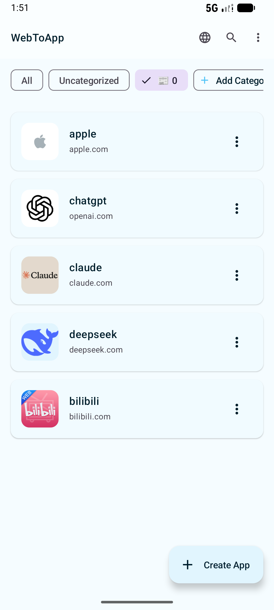
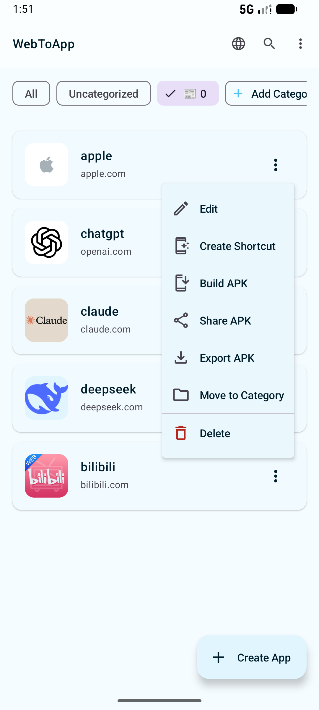
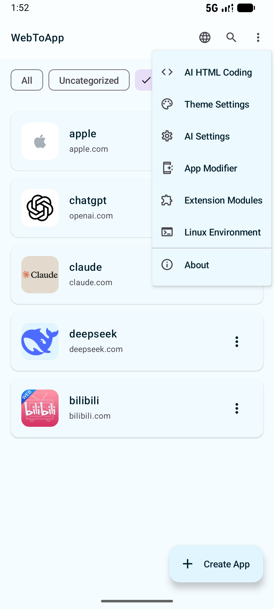
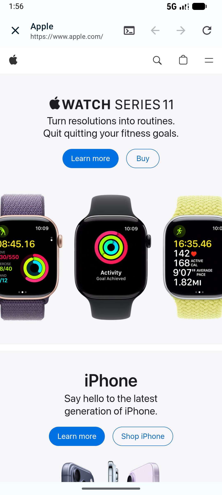
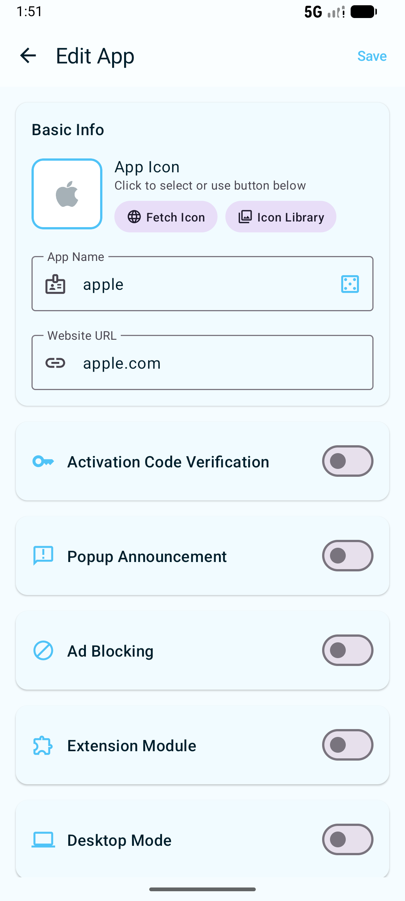
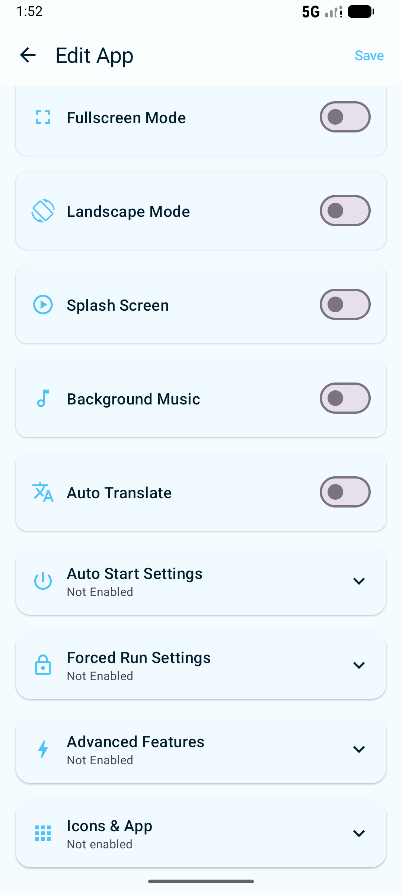
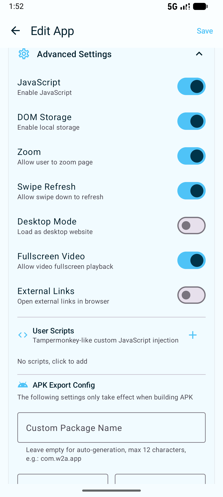
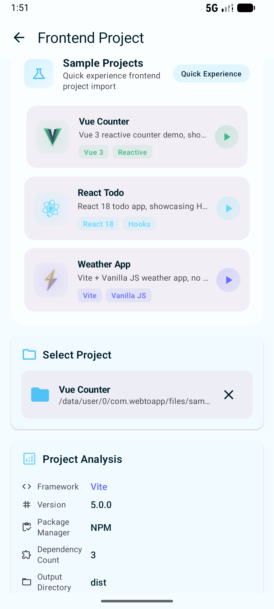
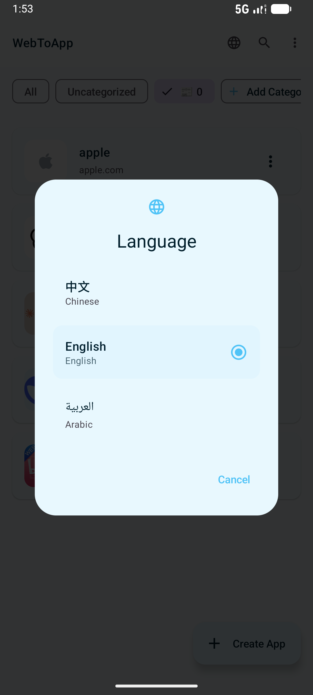
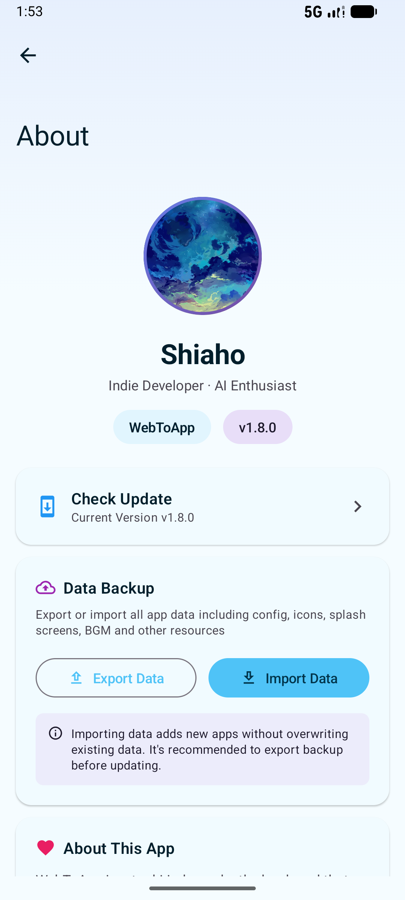

Heads up: This repository is a native Android application
(Kotlin + Jetpack Compose, built with Gradle). It produces an APK and is meant to
run on an Android device — it has no web frontend or backend. This page is a
project preview so you can see what the project is about inside Replit.
About
WebToApp lets you wrap any website, media, or HTML bundle into a standalone Android app — no Android Studio required. The full feature list, screenshots, and instructions are in the project's README.
Screenshots










Building the APK
Building requires the Android SDK, which isn't installed in this Replit environment by default. To build locally:
./gradlew assembleDebug
The output APK will be placed under app/build/outputs/apk/.